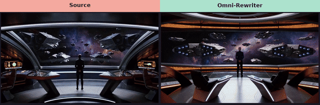
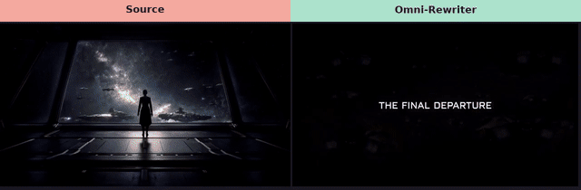
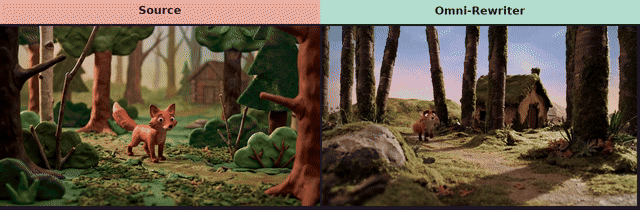

Source vs Omni-Rewriter
Left: Source (first 10s). Right: Omni-Rewriter PE replayed on MiniMax-H3. Expand ≠ generate. Public H3 generate window is integer 4–15s.
MiniMax-H3 official T2VA
First 10s Source vs Omni-Rewriter. Expand ≠ generate. Left is Source; right is Omni-Rewriter PE replayed on MiniMax-H3.

MiniMax-H3 cinematic showcase
First 10s Source vs Omni-Rewriter. Expand ≠ generate. Left is Source; right is Omni-Rewriter PE replayed on MiniMax-H3.

Seedance 2.5 ornithopter
First 10s Source vs Omni-Rewriter (public H3 generate window is 4–15s). Expand ≠ generate. Left is Source; right is Omni-Rewriter PE replayed on MiniMax-H3.
H3 official montage
First 10s Source vs Omni-Rewriter (public H3 generate window is 4–15s). Expand ≠ generate. Left is Source; right is Omni-Rewriter PE replayed on MiniMax-H3.
